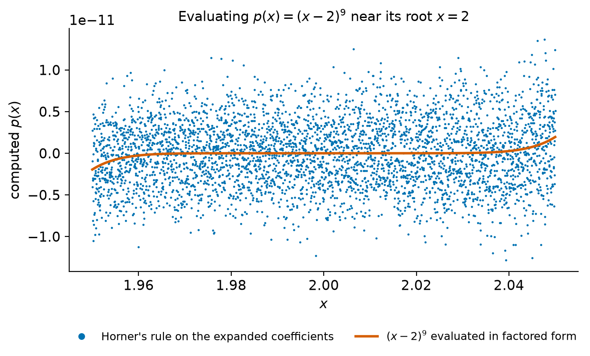
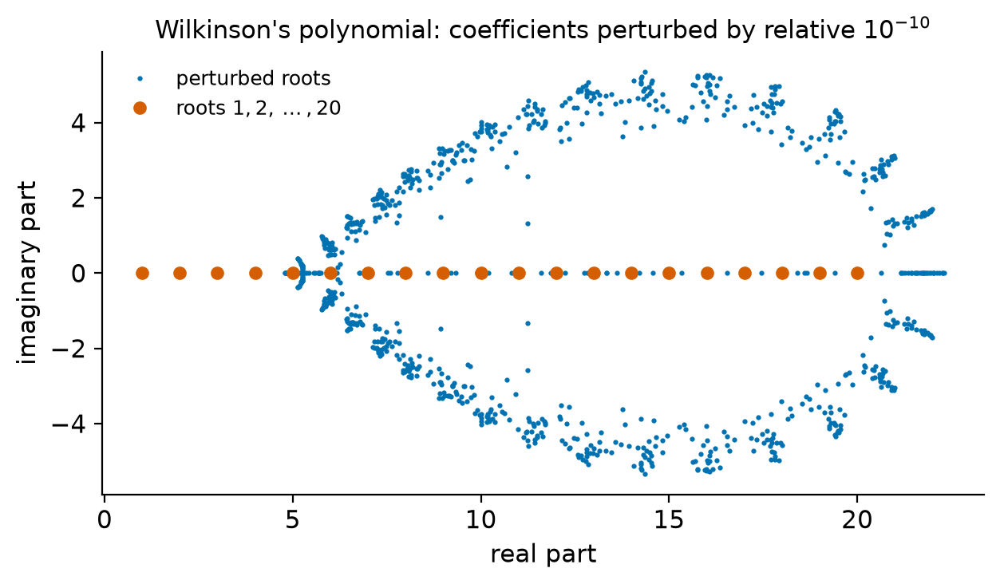
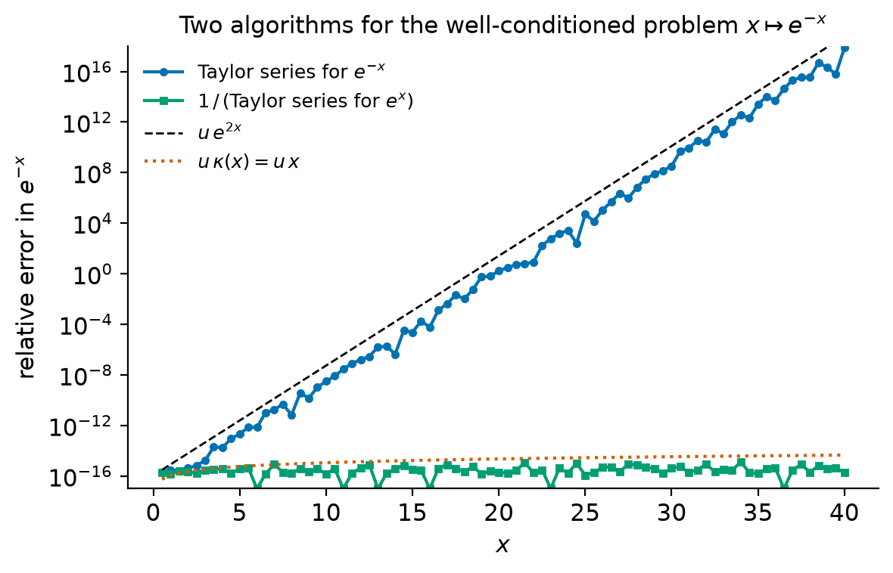
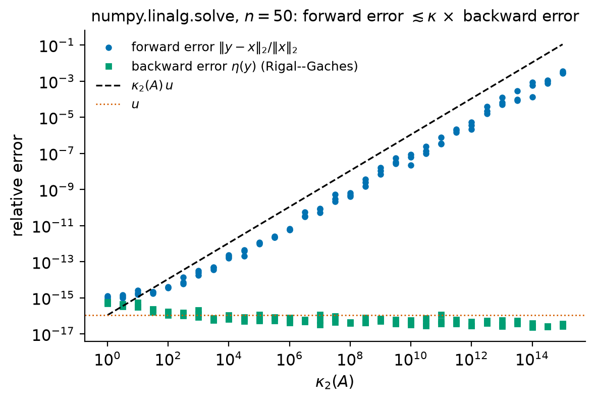

4. Conditioning and stability#
Every computed answer is wrong. The data are measured or rounded before the computation starts, and every floating-point operation commits a further relative error of size up to \(u\) (Chapter 3). The useful question is therefore not whether a result is exact but whether its error is as small as the data and the arithmetic allow. Answering it requires two separate ideas.
Conditioning is a property of a mathematical problem. It measures how much the exact answer can change when the data change a little, and it has nothing to do with computers or algorithms. Stability is a property of an algorithm. It asks whether the algorithm, run in floating-point arithmetic, produces an answer that is exact, or nearly exact, for data close to the data it was given. The two combine in the single most useful rule of numerical analysis:
This chapter makes each piece of the rule precise. We define condition numbers for general problems and compute them for simple functions, for polynomial evaluation and root finding, and above all for linear systems, where the condition number \(\kappa(A) = \|A\|\,\|A^{-1}\|\) governs everything that follows in the course. We prove the classical perturbation theorem for \(Ax = b\), characterize \(1/\kappa_2(A)\) as the relative distance to the nearest singular matrix, and introduce componentwise perturbation theory, which explains why some matrices with enormous \(\kappa(A)\) nevertheless give accurate solutions. We then define forward and backward errors and backward stability, derive computable formulas for the backward error of an approximate solution of \(Ax = b\), and study algorithms that are stable and algorithms that are not. The chapter ends with the Hilbert matrix, which separates the error caused by rounding the data from the error caused by the algorithm.
Throughout, \(u = 2^{-53}\approx1.11\times10^{-16}\) is the unit roundoff of IEEE double precision. Trefethen and Bau [1997] write \(\epsilon_{\text{machine}}\) for the same quantity; when we quote their results we translate them to \(u\).
Learning objectives
After working through this chapter you should be able to:
define the absolute and relative condition numbers of a problem, compute them from the Jacobian, and use the componentwise relative condition number for problems whose data have independent relative errors;
explain why subtraction of nearly equal numbers, evaluation of a polynomial near a root, and computation of clustered roots are ill-conditioned;
state and prove the perturbation theorem for \(Ax = b\) with perturbations in both \(A\) and \(b\), and explain precisely in what sense it is sharp;
prove that \(1/\kappa_2(A)\) is the relative distance from \(A\) to the singular matrices;
compute Skeel’s condition number and explain when it is much smaller than \(\kappa(A)\);
define forward error, backward error, backward stability and stability, and derive the rule “forward error \(\lesssim\) condition number \(\times\) backward error”;
compute the normwise (Rigal–Gaches) and componentwise (Oettli–Prager) backward errors of an approximate solution of \(Ax = b\), and explain why the relative residual \(\|r\|/\|b\|\) is not the backward error;
decide whether simple algorithms are backward stable, and replace unstable algorithms by stable ones.
4.1. Problems and condition numbers#
4.1.1. Problems as maps#
We model a problem as a function \(f: X\to Y\) from a normed space of data to a normed space of solutions. The same computation can be described by different problems depending on what we regard as data: solving \(Ax = b\) is the map \(b\mapsto A^{-1}b\) if \(A\) is fixed and exact, the map \((A,b)\mapsto A^{-1}b\) if both are uncertain, and the map \(A\mapsto A^{-1}b\) if only \(A\) is. The condition number depends on this choice, and also on the norms used to measure the data and the solution.
The question conditioning answers is: if the data \(x\) are replaced by \(x + \Delta x\) with \(\Delta x\) small, how large can \(f(x+\Delta x) - f(x)\) be? We use \(\Delta\) for perturbations of data and solutions and \(t\) for the size of a perturbation. The letter \(\delta\) is reserved for individual rounding errors, \(\fl(a\circ b) = (a\circ b)(1+\delta)\) with \(|\delta|\le u\).
Definition 4.1 (Condition numbers)
Let \(f: X\to Y\) and \(x\in X\). The absolute condition number of \(f\) at \(x\) is
If \(x\neq0\) and \(f(x)\neq0\), the relative condition number is
A problem is well-conditioned at \(x\) if \(\kappa(x)\) is small (say \(1\), \(10\) or \(100\)) and ill-conditioned if it is large (say \(10^{6}\) or \(10^{16}\)).
The relative condition number is the one that matters in floating-point arithmetic, because rounding errors are relative. Informally, \(\kappa(x)\) is the factor by which a small relative change of the data can be amplified in the solution. The limit \(h\to0\) makes it a statement about infinitesimal perturbations; for perturbations of finite size, bounds such as Theorem 4.2 below carry an extra factor that tends to \(1\) as the perturbation tends to zero.
Theorem 4.1 (Condition numbers of differentiable problems)
If \(f:\R^n\to\R^m\) is differentiable at \(x\) with Jacobian \(J(x)\), then \(\hat\kappa(x) = \|J(x)\|\), the matrix norm induced by the norms on \(\R^n\) and \(\R^m\), and
Proof. Differentiability means \(f(x+\Delta x) - f(x) = J(x)\Delta x + e(\Delta x)\) with \(\|e(\Delta x)\|/\|\Delta x\|\to0\) as \(\Delta x\to0\). Hence for \(0<\|\Delta x\|\le h\),
and the right-hand side tends to \(\|J(x)\|\). Conversely, let \(w\) be a unit vector with \(\|J(x)w\| = \|J(x)\|\) and take \(\Delta x = hw\). Then the quotient is at least \(\|J(x)\| - \|e(hw)\|/h\to\|J(x)\|\). So the limit exists and equals \(\|J(x)\|\). The relative condition number is \(\hat\kappa(x)\,\|x\|/\|f(x)\|\) by definition.
Normwise condition numbers treat the data as one vector. When the entries of the data carry independent relative errors, for instance because each was rounded to floating point, it is more natural to allow perturbations with \(|\Delta x_i|\le t|x_i|\) for every \(i\). For a differentiable scalar function \(f:\R^n\to\R\) the same argument as in the proof above gives the componentwise relative condition number
For a function of one variable both definitions reduce to \(\kappa(x) = |x f'(x)/f(x)|\).
Example 4.1 (Condition numbers of elementary operations)
Square root. For \(f(x) = \sqrt x\) with \(x>0\), \(\kappa(x) = |x\cdot\tfrac12x^{-1/2}/\sqrt x| = \tfrac12\). Taking a square root halves relative errors; it is perfectly conditioned.
Multiplication. For \(f(x_1,x_2) = x_1x_2\) we get \(\kappa_{\rm c} = (|x_1||x_2| + |x_2||x_1|)/|x_1x_2| = 2\) from (4.3): relative errors in the factors at most add. (If we measured the data normwise in the \(\infty\)-norm instead, we would get \((|x_1|+|x_2|)\max(|x_1|,|x_2|)/|x_1x_2|\), which is large when \(|x_1|\gg|x_2|\). This is an artifact of the norm, which allows a perturbation of the small factor as large as the big one.)
Subtraction. For \(f(x_1,x_2) = x_1 - x_2\) the Jacobian is \([1,\,-1]\), whose norm as a map from \((\R^2,\|\cdot\|_\infty)\) to \(\R\) is \(2\), so
Both are large exactly when \(x_1\approx x_2\). For \(x_1 = 1\) and \(x_2 = 0.999\) we get \(\kappa = 2/0.001 = 2000\) and \(\kappa_{\rm c} = 1999\): the subtraction magnifies relative errors already present in \(x_1\) and \(x_2\) by about three orders of magnitude. This is cancellation. The subtraction itself commits at most one rounding error of relative size \(u\); what it does is expose errors made earlier.
4.1.2. Polynomials: evaluation near a root and roots#
Let \(p(x) = \sum_{k=0}^n a_kx^k\). As a function of \(x\) with fixed exact coefficients, \(\kappa(x) = |xp'(x)/p(x)|\), which is infinite at a root and large near one. More relevant for computation is the condition number with respect to the coefficients, because rounding errors in Horner’s rule act like perturbations of the coefficients. By (4.3), with \(\partial p/\partial a_k = x^k\),
Horner’s rule computes a value \(\hat p(x)\) with \(|\hat p(x) - p(x)|\le\gamma_{2n}\sum_k|a_k||x|^k\), where \(\gamma_{2n} = 2nu/(1-2nu)\) [Higham, 2002] (Section 5.1). The relative error is therefore bounded by \(\gamma_{2n}\,\kappa_{\rm c}(a;x)\), a first instance of the rule “condition number \(\times\) backward error”.
Example 4.2 (Evaluating \((x-2)^9\) from its expanded coefficients)
The polynomial \(p(x) = (x-2)^9 = \sum_{k=0}^{9}\binom9k(-2)^{9-k}x^k\) has integer coefficients that are exactly representable. For \(x\ge0\) the terms alternate in sign and \(\sum_k|a_k||x|^k = (x+2)^9\), so
At \(x = 2.1\) this is \(41^9\approx3.3\times10^{14}\), and at \(x = 2.05\) it is \(81^9\approx1.5\times10^{17}\). Near \(x = 2\) the bound \(\gamma_{18}\sum_k|a_k||x|^k\approx\gamma_{18}\,4^9\) is about \(5.2\times10^{-10}\), while \(|p(x)|\le 0.05^9\approx2.0\times10^{-12}\) on \([1.95, 2.05]\). Figure 4.1 shows the result: Horner’s rule returns rounding noise of amplitude about \(10^{-11}\) (the largest observed error on a grid of 4001 points is about \(1.3\times10^{-11}\), well within the bound), and the sign of the computed value is essentially random. Evaluating the factored form \((x-2)^9\) instead is accurate, because \(x - 2\) is computed exactly for \(x\in[1,4]\) and the remaining eight multiplications are backward stable. The problem “evaluate \(p\) from its coefficients” and the problem “evaluate \((x-2)^9\) from \(x\)” have the same exact answer and very different condition numbers.


Figure 4.1 Evaluating \((x-2)^9\) at 4001 points of \([1.95,2.05]\). Horner’s rule on the expanded coefficients (dots) produces rounding noise that is larger than the function itself; the factored form (curve) is accurate. The condition number (4.4) explains the difference.#
Roots are even more sensitive. Let \(r\) be a simple root of \(p\) and perturb the coefficients to \(a_k + \Delta a_k\). By the implicit function theorem the perturbed polynomial has a root \(r + \Delta r\) with, to first order, \(p'(r)\Delta r + \sum_k\Delta a_kr^k = 0\). If only the coefficient \(a_k\) is perturbed, with \(|\Delta a_k|\le t|a_k|\), the relative condition number of the root is
A multiple root has \(p'(r) = 0\), and its condition number is infinite: the roots of \((x-1)^2 - t\) are \(1\pm\sqrt t\), so a perturbation of size \(t = 10^{-16}\) of one coefficient moves the roots by \(10^{-8}\). A perturbation of order \(u\) in the data therefore limits a computed double root to about half the available digits, whatever the algorithm.
Remark 4.1 (Wilkinson’s polynomial)
Simple, well-separated roots can also be extremely ill-conditioned. Wilkinson’s polynomial \(w(x) = \prod_{k=1}^{20}(x-k) = x^{20} - 210x^{19} + \dots + 20!\) has the integer roots \(1,\dots,20\), but its coefficients vary from \(1\) to \(20!\approx2.4\times10^{18}\) in magnitude and alternate in sign. Evaluating (4.5) in exact integer arithmetic, the root \(r = 15\) has condition number about \(4.7\times10^{12}\) with respect to the coefficient \(a_{15} = -1672280820\), and the largest of the 420 condition numbers \(\kappa_k(r)\) is about \(1.0\times10^{13}\), for \(r = 14\) and \(k = 12\) (Exercise 4.9). Figure 4.2 shows the roots of 60 polynomials whose coefficients were perturbed randomly by relative amounts of order \(10^{-10}\): most of the roots move by amounts of order one and many become complex. Trefethen and Bau [1997] (Lecture 12) show a similar experiment.


Figure 4.2 Roots of \(\prod_{k=1}^{20}(x-k)\) after each coefficient \(a_k\),
\(0\le k\le19\), is replaced by \(a_k(1+10^{-10}r_k)\) with independent standard
normal \(r_k\) (the leading coefficient stays \(1\)), for 60 samples. The roots were computed with numpy.roots and refined in 60-digit
decimal arithmetic, so the picture shows the exact roots of the perturbed
polynomials.#
4.2. The condition number of a matrix#
4.2.1. Matrix-vector multiplication and linear systems#
Fix \(A\in\R^{n\times n}\) nonsingular and consider the problem \(f(x) = Ax\). It is linear, so \(J = A\), and (4.2) gives
because \(\|x\| = \|A^{-1}Ax\|\le\|A^{-1}\|\,\|Ax\|\). Solving \(Ax = b\) for fixed \(A\) is the problem \(b\mapsto A^{-1}b\), with condition number
because \(\|b\|\le\|A\|\,\|x\|\). Finally, for fixed \(b\) the problem \(A\mapsto A^{-1}b\) has derivative \(\Delta A\mapsto -A^{-1}\Delta A\,x\), whose norm is at most \(\|A^{-1}\|\,\|x\|\); the relative condition number is therefore at most \(\|A^{-1}\|\,\|A\|\), with equality in the 2-norm (take \(\Delta A = u_nx^T\) in the notation of Proposition 4.1). The same quantity bounds all three problems [Trefethen and Bau, 1997] (Lecture 12).
Definition 4.2 (Condition number of a matrix)
The condition number of a nonsingular \(A\in\R^{n\times n}\) with respect to an induced norm is \(\kappa(A) = \|A\|\,\|A^{-1}\|\). We write \(\kappa_p(A)\) for the \(p\)-norm. By convention \(\kappa(A) = \infty\) if \(A\) is singular.
Proposition 4.1 (Properties of the condition number)
Let \(A\in\R^{n\times n}\) be nonsingular with singular value decomposition \(A = U\Sigma V^T\), \(U = [u_1,\dots,u_n]\), \(V = [v_1,\dots,v_n]\), \(\sigma_1\ge\dots\ge\sigma_n>0\). For every induced norm,
\(\kappa(A)\ge1\);
\(\kappa(\alpha A) = \kappa(A)\) for every scalar \(\alpha\neq0\), and \(\kappa(A^{-1}) = \kappa(A)\);
\(\kappa(A)\ge|\lambda|_{\max}/|\lambda|_{\min}\), the ratio of the largest to the smallest modulus of an eigenvalue of \(A\).
Moreover \(\kappa_2(A) = \sigma_1/\sigma_n\), and \(\kappa_2(QAZ) = \kappa_2(A)\) for orthogonal \(Q\) and \(Z\); in particular \(\kappa_2(Q) = 1\).
Proof. (1) \(1 = \|I\| = \|AA^{-1}\|\le\|A\|\,\|A^{-1}\|\) by Proposition 1.5. (2) \((\alpha A)^{-1} = \alpha^{-1}A^{-1}\) and the factors \(|\alpha|\) and \(|\alpha|^{-1}\) cancel; the second statement is symmetric in \(A\) and \(A^{-1}\). (3) By Theorem 1.7, \(\|A\|\ge\rho(A) = |\lambda|_{\max}\) and \(\|A^{-1}\|\ge\rho(A^{-1}) = 1/|\lambda|_{\min}\). For the 2-norm, \(\|A\|_2 = \sigma_1\) and \(A^{-1} = V\Sigma^{-1}U^T\) has largest singular value \(1/\sigma_n\) (Chapter 2). Unitary invariance of the 2-norm (Theorem 1.6) gives the last statement.
Geometrically, \(\kappa_2(A)\) is the ratio of the longest to the shortest semi-axis of the ellipsoid \(\{Ax:\|x\|_2 = 1\}\) (compare Figure 1.2). For normal matrices, in particular symmetric ones, equality holds in (3), so \(\kappa_2(A)\) is the ratio of the extreme eigenvalue moduli. For nonnormal matrices the eigenvalues can be completely misleading: \(A = \begin{bmatrix}1&M\\0&1\end{bmatrix}\) has both eigenvalues equal to \(1\), but \(A^{-1} = \begin{bmatrix}1&-M\\0&1\end{bmatrix}\) and \(\kappa_\infty(A) = (1+|M|)^2\).
Different norms give different condition numbers, but not very different ones: from the norm equivalences of Exercise 1.5, \(\kappa_2(A)/n\le\kappa_1(A)\le n\,\kappa_2(A)\), and similarly for the \(\infty\)-norm (Exercise 4.2). A matrix is ill-conditioned or not independently of the norm, up to factors of \(n\).
Warning
The determinant does not measure conditioning. The matrix \(0.1\,I_{100}\) has determinant \(10^{-100}\) and condition number \(1\); the matrix \(\begin{bmatrix}1&M\\0&1\end{bmatrix}\) has determinant \(1\) and condition number about \(M^2\). The determinant scales like the \(n\)th power of the matrix, while \(\kappa(A)\) is invariant under scaling.
4.3. Perturbation theory for linear systems#
4.3.1. The perturbation theorem#
We now allow errors in both \(A\) and \(b\) and look for a bound that holds for perturbations of finite size, not only to first order. The key tool is a bound for the inverse of a perturbation of the identity.
Lemma 4.1 (Perturbations of the identity)
Let \(\|\cdot\|\) be an induced norm and \(F\in\R^{n\times n}\) with \(\|F\|<1\). Then \(I + F\) is nonsingular and \(\|(I+F)^{-1}\|\le1/(1-\|F\|)\).
Proof. If \((I+F)z = 0\) then \(\|z\| = \|Fz\|\le\|F\|\,\|z\|\), which forces \(z = 0\); so \(I+F\) is nonsingular. For any \(w\), the vector \(z = (I+F)^{-1}w\) satisfies \(z = w - Fz\), so \(\|z\|\le\|w\| + \|F\|\,\|z\|\), that is, \(\|z\|\le\|w\|/(1-\|F\|)\). Take the maximum over \(\|w\| = 1\).
Theorem 4.2 (Perturbation of linear systems)
Let \(A\in\R^{n\times n}\) be nonsingular, \(b\neq0\), and \(Ax = b\). Let \(\|\cdot\|\) be a vector norm with its induced matrix norm and \(\kappa = \kappa(A)\). If \(\|A^{-1}\|\,\|\Delta A\|<1\), then \(A + \Delta A\) is nonsingular, and the solution of \((A+\Delta A)(x+\Delta x) = b + \Delta b\) satisfies
Proof. Write \(A + \Delta A = A(I + A^{-1}\Delta A)\). Since \(\|A^{-1}\Delta A\|\le\|A^{-1}\|\,\|\Delta A\|<1\), Lemma 4.1 shows that \(A+\Delta A\) is nonsingular with
Subtracting \(Ax = b\) from \((A+\Delta A)(x+\Delta x) = b+\Delta b\) gives \((A+\Delta A)\Delta x = \Delta b - \Delta A\,x\), hence
Divide by \(\|x\|\) and use \(\|b\|\le\|A\|\,\|x\|\), which gives \(\|\Delta b\|/\|x\|\le\|A\|\,\|\Delta b\|/\|b\|\). Finally, \(\|A^{-1}\|\,\|\Delta A\| = \kappa\,\|\Delta A\|/\|A\|\) and \(\|A^{-1}\|\,\|A\| = \kappa\).
If the relative perturbations of \(A\) and \(b\) are both at most \(t\) and \(\kappa t<1\), the theorem gives \(\|\Delta x\|/\|x\|\le2\kappa t/(1-\kappa t)\), which is \(2\kappa t + \bigO(t^2)\). The special cases are worth remembering: with \(\Delta A = 0\) the bound is exactly \(\kappa\,\|\Delta b\|/\|b\|\), and with \(\Delta b = 0\) it is \(\kappa\,\|\Delta A\|/\|A\|\) to first order. Another useful form, with no smallness assumption, is \(\|\Delta x\|/\|x+\Delta x\|\le\kappa\,\|\Delta A\|/\|A\|\) when \(\Delta b = 0\) (Exercise 4.3).
4.3.2. In what sense the bound is sharp#
The bound (4.7) is a worst case over all perturbations of a given size. It is attained, or attained to first order, for suitably aligned data and perturbations. In the 2-norm, with the notation of Proposition 4.1:
Perturbations of \(b\). Take \(x = v_1\), so that \(b = \sigma_1u_1\) and \(\|b\|_2 = \|A\|_2\|x\|_2\), and \(\Delta b = t\|b\|_2\,u_n\). Then \(\Delta x = A^{-1}\Delta b = (t\sigma_1/\sigma_n)v_n\), and \(\|\Delta x\|_2/\|x\|_2 = \kappa_2(A)\,t\) exactly.
Perturbations of \(A\). For any \(x\), take \(\Delta A = t\|A\|_2\,u_nx^T/\|x\|_2\), a rank-one matrix with \(\|\Delta A\|_2 = t\|A\|_2\). To first order \(\Delta x\approx-A^{-1}\Delta A\,x = -t\sigma_1\|x\|_2\,v_n/\sigma_n\), so \(\|\Delta x\|_2/\|x\|_2 = \kappa_2(A)\,t + \bigO(t^2)\).
So no smaller constant than \(\kappa\) can replace \(\kappa\) in a bound that holds for all data and all perturbations. That is all the sharpness says. For a particular right-hand side the relevant condition number is (4.6), which can be as small as \(1\) (take \(x = v_n\)). For a particular perturbation the error can be much smaller than the bound, and random perturbations typically are not aligned with the worst direction. The lab measures the ratio of actual error to bound for aligned and for random perturbations.
Warning
A common statement is “if \(\kappa(A)\approx10^k\) then \(k\) digits are lost, and no algorithm can do better.” The precise statement is weaker and more useful. If the data are known only to relative accuracy \(t\), then the data determine the solution only to relative accuracy about \(\kappa t\) in the worst case, because there are admissible data (aligned perturbations) whose solutions differ by that much. A backward stable algorithm (Section 4.5) introduces a perturbation of relative size \(\bigO(u)\), so its forward error is guaranteed to be \(\bigO(\kappa u)\), and no better guarantee is possible for algorithms that are only known to be backward stable. For a given \(b\), or for perturbations with structure (for example small relative perturbations of each entry, Section 4.4), the actual loss of accuracy can be far smaller than \(\log_{10}\kappa\) digits.
Example 4.3 (A \(2\times2\) system where the bound is attained)
Let
In the \(\infty\)-norm, \(\|A\|_\infty = 2.0001\) and \(\|A^{-1}\|_\infty = 2.0001\times10^4\), so \(\kappa_\infty(A) = 2.0001^2\times10^4\approx4.0004\times10^4\). Take \(x = (1,1)^T\), so \(b = (2, 2.0001)^T\) and \(\|b\|_\infty = \|A\|_\infty\|x\|_\infty\). Perturb \(b\) by \(\Delta b = t(1,-1)^T\). Then
and the amplification factor is exactly \(2.0001^2\times10^4 = \kappa_\infty(A)\). With \(t = 10^{-4}\) a change in the fifth significant digit of \(b\) changes the solution from \((1,1)^T\) to \((3.0001,-1)^T\). By contrast, the perturbation \(\Delta b = t(1,1)^T\) gives \(\Delta x = t(1,0)^T\), an amplification of only \(2.0001\).
Check your understanding
For the matrix of Example 4.3, is the problem of computing \(Ax\) for \(x = (1,-1)^T\) well-conditioned? Is solving \(Ay = b\) for \(b = (1,-1)^T\) well-conditioned?
Answer. \(Ax = (0, -0.0001)^T\), so the condition number of multiplication is \(\|A\|_\infty\|x\|_\infty/\|Ax\|_\infty = 2.0001/10^{-4}\approx2\times10^4\): the product is ill-conditioned because it involves cancellation. For the solve, \(y = A^{-1}b = 10^4(2.0001,-2)^T\) and the condition number (4.6) is \(\|A^{-1}\|_\infty\|b\|_\infty/\|y\|_\infty = 2.0001\times10^4/(2.0001\times10^4) = 1\) with respect to perturbations of \(b\), although \(\kappa_\infty(A)\approx4\times10^4\). With respect to perturbations of \(A\) the solve remains ill-conditioned.
4.3.3. The distance to singularity#
The hypothesis \(\|A^{-1}\|\,\|\Delta A\|<1\) of the perturbation theorem is not a technicality. It says that the relative perturbation \(\|\Delta A\|/\|A\|\) is smaller than \(1/\kappa(A)\), and the next theorem shows that perturbations of that size can make \(A\) singular.
Theorem 4.3 (Distance to the nearest singular matrix)
Let \(A\in\R^{n\times n}\) be nonsingular. Then
The minimum is attained by the rank-one matrix \(\Delta A = -\sigma_nu_nv_n^T\). For any induced norm, every \(\Delta A\) with \(A+\Delta A\) singular satisfies \(\|\Delta A\|/\|A\|\ge1/\kappa(A)\).
Proof. Suppose \(A + \Delta A\) is singular, and let \(z\neq0\) with \((A+\Delta A)z = 0\). Then \(z = -A^{-1}\Delta A\,z\), so \(\|z\|\le\|A^{-1}\|\,\|\Delta A\|\,\|z\|\) and \(\|\Delta A\|\ge1/\|A^{-1}\|\). Dividing by \(\|A\|\) gives the lower bound in any induced norm; in the 2-norm, \(1/\|A^{-1}\|_2 = \sigma_n\). For the matrix \(\Delta A = -\sigma_nu_nv_n^T\) we have \(\|\Delta A\|_2 = \sigma_n\) and \((A+\Delta A)v_n = \sigma_nu_n - \sigma_nu_n = 0\), so \(A + \Delta A\) is singular and the bound is attained.
In words, \(1/\kappa_2(A)\) is the relative distance from \(A\) to the set of singular matrices. The equality in fact holds for every induced norm (a theorem of Gastinel and Kahan, see Higham [2002], Chapter 6), but the 2-norm case, which uses the SVD, is the one we need. The theorem explains the practical meaning of \(\kappa(A)u\gtrsim1\): such a matrix is within rounding distance of a singular matrix, and a computation that commits errors of relative size \(u\) in \(A\) cannot distinguish it from a singular one. We call it numerically singular. The Hilbert matrix \(H_{12}\), with \(\kappa_2(H_{12})\approx1.7\times10^{16}\) (Section 4.8.1), is an example.
4.4. Componentwise perturbation theory#
Normwise perturbations \(\|\Delta A\|\le t\|A\|\) allow tiny entries of \(A\) to change by amounts comparable to its largest entries. That is often unrealistic. Rounding the data to floating point, for example, changes each entry by a relative amount at most \(u\): \(\fl(A) = A + \Delta A\) with \(|\Delta A|\le u|A|\), where \(|A|\) denotes the matrix of absolute values and the inequality holds entrywise. Perturbations of this form preserve zeros and are invariant under scaling of rows and columns.
Theorem 4.4 (Componentwise perturbation bound)
Let \(A\) be nonsingular, \(Ax = b\) with \(x\ne0\), and suppose \((A+\Delta A)(x+\Delta x) = b+\Delta b\) with \(|\Delta A|\le t|A|\) and \(|\Delta b|\le t|b|\). If \(t\,\||A^{-1}||A|\|_\infty<1\), then
where \(\mathrm{cond}(A,x)\) and \(\mathrm{cond}(A)\) are defined in (4.8).
Proof. From \(A\Delta x = \Delta b - \Delta A\,x - \Delta A\,\Delta x\) we get \(\Delta x = A^{-1}(\Delta b - \Delta A\,x - \Delta A\,\Delta x)\), and taking absolute values entrywise,
Taking \(\infty\)-norms and using \(\||A^{-1}||A||\Delta x|\|_\infty\le \||A^{-1}||A|\|_\infty\|\Delta x\|_\infty\) gives the first inequality after rearranging. For the second, \(|b| = |Ax|\le|A||x|\), so \(|A^{-1}|(|A||x|+|b|)\le2|A^{-1}||A||x|\).
Definition 4.3 (Skeel’s condition number)
For nonsingular \(A\) and \(x\neq0\),
where \(e = (1,\dots,1)^T\) [Skeel, 1980].
Proposition 4.2 (Properties of Skeel’s condition number)
For nonsingular \(A\), \(x\neq0\) and nonsingular diagonal \(D\),
\(\mathrm{cond}(A,x)\le\mathrm{cond}(A)\le\kappa_\infty(A)\);
\(\mathrm{cond}(DA) = \mathrm{cond}(A)\) and \(\mathrm{cond}(DA,x) = \mathrm{cond}(A,x)\);
\(\mathrm{cond}(A)\ge1\).
Proof. (1) By submultiplicativity,
where the last step holds because the \(\infty\)-norm of a matrix depends only on the absolute values of its entries. (2) Since \(D\) is diagonal, \(|(DA)^{-1}||DA| = |A^{-1}D^{-1}||D||A| = |A^{-1}||D^{-1}||D||A| = |A^{-1}||A|\). (3) \(|A^{-1}||A|\ge|A^{-1}A| = I\) entrywise.
Property 2 is the point: Skeel’s condition number ignores row scaling, whereas \(\kappa_\infty(DA)\) can be made arbitrarily large by choosing \(D\). In fact \(\mathrm{cond}(A) = \min_D\kappa_\infty(DA)\) over nonsingular diagonal \(D\): properties 1 and 2 give \(\kappa_\infty(DA)\ge\mathrm{cond}(DA) = \mathrm{cond}(A)\), and the row equilibration \(D = \diag\big(1/(|A|e)_i\big)\) gives \(\|DA\|_\infty = 1\) and \(\|(DA)^{-1}\|_\infty = \||A^{-1}|D^{-1}e\|_\infty = \||A^{-1}||A|e\|_\infty = \mathrm{cond}(A)\). So \(\mathrm{cond}(A)\) is the normwise condition number of the best row scaling of \(A\) [Higham, 2002] (Section 7.3).
Example 4.4 (A badly row-scaled matrix)
Let
Then \(\|A\|_\infty = 2\) and \(\|A^{-1}\|_\infty = (1+10^8)/2\), so
\(\kappa_\infty(A) = 1+10^8\). But
\(|A^{-1}||A| = \begin{bmatrix}1&1\\1&1\end{bmatrix}\) and
\(\mathrm{cond}(A) = 2\). Normwise perturbations of relative size \(t\) may change
the second row by as much as \(t\), which completely destroys an equation whose
coefficients are \(10^{-8}\); such perturbations can change \(x\) by a relative
amount of order \(10^8t\). Componentwise perturbations of the same size change
\(x\) by at most about \(4t\). Which bound is relevant depends on the errors the
data actually have, and on the errors the algorithm actually commits. In the
lab, numpy.linalg.solve applied to a random \(50\times50\) matrix whose rows
are scaled by factors from \(1\) to \(10^{-12}\) gives a forward error of the
order of \(\mathrm{cond}(A)u\) or smaller, far below \(\kappa_\infty(A)u\).
Gaussian elimination with partial pivoting is not guaranteed to produce componentwise small backward errors, but Skeel [1980] proved that one step of iterative refinement in working precision makes the componentwise backward error small under mild conditions. We return to this in Chapter 6.
4.5. Forward error, backward error and stability#
4.5.1. Definitions#
An algorithm for a problem \(f: X\to Y\) is a map \(\hat f: X\to Y\) defined by a sequence of floating-point operations; \(\hat f(x)\) is what the computer returns. It depends on the arithmetic, so it is a different map for each floating-point system.
Definition 4.4 (Forward and backward error)
The forward error of \(\hat f\) at \(x\) is \(\|\hat f(x) - f(x)\|\), or \(\|\hat f(x) - f(x)\|/\|f(x)\|\) in relative terms. The (relative) backward error is
the smallest relative perturbation of the data for which the computed answer is the exact answer (\(\eta = \infty\) if there is none).
The forward error is what we want to know, but we can rarely compute it, because \(f(x)\) is unknown. The backward error is often computable, and it compares the algorithm with the only standard that makes sense when the data themselves are uncertain: if \(\eta(x)\) is no larger than the uncertainty in the data, the computed answer is as good as the data deserve.
Definition 4.5 (Stability)
An algorithm \(\hat f\) for \(f\) is
backward stable if for each \(x\) there is \(\tilde x\) with \(\hat f(x) = f(\tilde x)\) and \(\|\tilde x - x\|/\|x\| = \bigO(u)\);
stable (or mixed forward-backward stable) if for each \(x\) there is \(\tilde x\) with \(\|\tilde x - x\|/\|x\| = \bigO(u)\) and \(\|\hat f(x) - f(\tilde x)\|/\|f(\tilde x)\| = \bigO(u)\).
Here \(\bigO(u)\) means: bounded by \(Cu\) for all \(x\) and all sufficiently small \(u\), with a constant \(C\) that does not depend on \(x\) but may depend on the dimensions of the problem.
A stable algorithm gives “nearly the right answer to nearly the right question,” in the phrase of Trefethen and Bau [1997] (Lecture 14), and a backward stable algorithm gives “exactly the right answer to nearly the right question.” Backward stability implies stability. Higham [2002] (Chapter 1) also calls an algorithm forward stable if its forward error is of the size \(\kappa u\) that a backward stable algorithm would produce, whether or not it is backward stable.
The basic floating-point operations are backward stable. For example, \(\fl(x_1 - x_2) = (x_1-x_2)(1+\delta) = x_1(1+\delta) - x_2(1+\delta)\) is the exact difference of data perturbed by relative amounts at most \(u\). The same holds for \(+\), \(\times\), \(/\) and, with IEEE arithmetic, for \(\sqrt{\ }\): \(\fl(\sqrt x) = \sqrt x(1+\delta) = \sqrt{x(1+\delta)^2}\).
4.5.2. Forward error, condition number and backward error#
Suppose \(\hat f(x) = f(x+\Delta x)\) with \(\|\Delta x\|/\|x\| = \eta\). By the definition (4.1) of the relative condition number,
If \(f\) is twice continuously differentiable, a Taylor expansion \(f(x+\Delta x) - f(x) = J(x)\Delta x + \bigO(\|\Delta x\|^2)\) gives the more explicit form
This is the precise content of the rule “forward error \(\lesssim\) condition number \(\times\) backward error.” It separates the two sources of error: the condition number belongs to the problem and the backward error to the algorithm.
Theorem 4.5 (Accuracy of backward stable algorithms)
If \(\hat f\) is a backward stable algorithm for a problem \(f\) with relative condition number \(\kappa(x)\), then
If \(\hat f\) is only stable, the relative forward error is \(\bigO\big((1+\kappa(x))u\big)\).
Proof. Backward stability gives \(\tilde x\) with \(\hat f(x) = f(\tilde x)\) and \(\|\tilde x - x\|/\|x\|\le Cu\). By (4.1), \(\|f(\tilde x) - f(x)\|/\|f(x)\|\le(\kappa(x)+o(1))Cu\) as \(u\to0\), which is \(\bigO(\kappa(x)u)\). For a stable algorithm write \(\hat f(x) - f(x) = \big(\hat f(x) - f(\tilde x)\big) + \big(f(\tilde x) - f(x)\big)\). The second term is bounded as before. The first is at most \(C'u\,\|f(\tilde x)\|\le C'u\big(\|f(x)\| + \|f(\tilde x) - f(x)\|\big)\), which is \(C'u\big(1 + \bigO(\kappa(x)u)\big)\|f(x)\|\) and hence \(\bigO\big((1+\kappa(x))u\big)\|f(x)\|\).
This is Theorem 15.1 of Trefethen and Bau [1997], translated to \(u\). It explains why backward error analysis became the standard method for analyzing algorithms: the stability of the algorithm and the conditioning of the problem can be studied separately and then combined.
4.6. Backward errors for linear systems#
For \(Ax = b\) the backward error of an approximate solution \(y\) can be computed exactly from the residual \(r = b - Ay\). Which formula is right depends on which data we allow to be perturbed and how we measure the perturbation.
Theorem 4.6 (Rigal–Gaches)
Let \(A\in\R^{n\times n}\), \(b\in\R^n\), \(y\in\R^n\) with \(\|A\|\,\|y\|+\|b\|>0\), and \(r = b - Ay\). The normwise backward error
is given by
Proof. We give the proof for the 2-norm; Rigal and Gaches [1967] treat general norms (see also Higham [2002], Section 7.1). If \((A+\Delta A)y = b + \Delta b\) with \(\|\Delta A\|\le t\|A\|\) and \(\|\Delta b\|\le t\|b\|\), then \(r = b - Ay = \Delta A\,y - \Delta b\), so \(\|r\|\le t(\|A\|\,\|y\| + \|b\|)\) and \(t\ge\eta(y)\). Conversely, let \(\eta = \eta(y)\), \(\alpha = \|A\|_2\|y\|_2 + \|b\|_2\), and (if \(y\ne0\))
Then \(\Delta A\,y - \Delta b = r(\|A\|_2\|y\|_2 + \|b\|_2)/\alpha = r\), so \((A+\Delta A)y = b+\Delta b\). Since \(\|ry^T\|_2 = \|r\|_2\|y\|_2\), we get \(\|\Delta A\|_2 = \|A\|_2\|r\|_2/\alpha = \eta\|A\|_2\) and \(\|\Delta b\|_2 = \eta\|b\|_2\). (If \(y = 0\) take \(\Delta A = 0\) and \(\Delta b = -b\).) So the minimum is attained and equals \(\eta\).
Combining this with Theorem 4.2 gives a computable error bound. If a solver returns \(y\) with \(\kappa(A)\eta(y)<1\), then
Warning
The relative residual \(\|r\|/\|b\|\) is not the backward error in general.
It is the backward error when only \(b\) may be perturbed
(Exercise 4.5), and by (4.10) it
exceeds \(\eta(y)\) by exactly the factor \(1 + \|A\|\,\|y\|/\|b\|\), which for
\(y\approx x\) can be as large as about \(1+\kappa(A)\). A backward stable solver
guarantees that \(\eta(y)\) is small; it does not guarantee a small relative
residual. In the lab, for a random right-hand side and \(\kappa_2(A) = 10^{12}\), numpy.linalg.solve returns \(y\) with
\(\eta(y)\) of order \(u\) while \(\|r\|_2/\|b\|_2\) is many orders of magnitude
larger. The quantity
\(\|r\|/(\|A\|\,\|y\|)\), the backward error when only \(A\) may be perturbed,
satisfies \(\eta\le\|r\|/(\|A\|\,\|y\|)\le2\eta\) whenever
\(\|A\|\,\|y\|\ge\|b\|\), so it is interchangeable with \(\eta\) in practice.
When each entry of \(A\) and \(b\) carries its own relative uncertainty, the right measure is componentwise.
Theorem 4.7 (Oettli–Prager)
With \(r = b - Ay\), the componentwise backward error
is given by
with the conventions \(0/0 = 0\) and \(\xi/0 = \infty\) for \(\xi\neq0\) [Higham, 2002] (Section 7.2).
Proof. If \((A+\Delta A)y = b+\Delta b\) with \(|\Delta A|\le t|A|\) and \(|\Delta b|\le t|b|\), then \(|r| = |\Delta A\,y - \Delta b|\le t(|A||y| + |b|)\), so \(t\ge\omega(y)\). Conversely, let \(D = \diag(d_i)\) with \(d_i = r_i/(|A||y|+|b|)_i\) (and \(d_i = 0\) if \(r_i = 0\)), let \(S = \diag(\sign(y_j))\), and put \(\Delta A = D|A|S\) and \(\Delta b = -D|b|\). Then \(\Delta A\,y - \Delta b = D(|A||y| + |b|) = r\), and \(|\Delta A|\le\omega|A|\), \(|\Delta b|\le\omega|b|\).
These formulas lead to a practical procedure that is carried out, in some form, by careful linear-equation software such as LAPACK [Anderson et al., 1999].
Algorithm 4.1 (A posteriori assessment of a computed solution)
Input: \(A\in\R^{n\times n}\), \(b\in\R^n\), a computed solution \(y\), and an LU factorization of \(A\).
Output: backward errors \(\eta_\infty(y)\) and \(\omega(y)\), and an approximate forward error bound.
Compute the residual \(r = b - Ay\) (\(2n^2\) flops).
\(\eta_\infty\leftarrow\|r\|_\infty/(\|A\|_\infty\|y\|_\infty + \|b\|_\infty)\) (\(n^2\) flops for \(\|A\|_\infty\)).
\(\omega\leftarrow\max_i|r_i|/(|A||y|+|b|)_i\) (\(2n^2\) flops).
Estimate \(\kappa_\infty(A)\) with a condition estimator that uses a few solves with the LU factors (\(\bigO(n^2)\) flops) [Hager, 1984].
Report \(2\kappa_\infty\eta_\infty/(1-\kappa_\infty\eta_\infty)\) as an estimate of \(\|y-x\|_\infty/\|x\|_\infty\) if \(\kappa_\infty\eta_\infty<1\).
The cost is \(\bigO(n^2)\), negligible next to the \(\tfrac23n^3\) flops of the LU factorization (Chapter 5). Two cautions apply. The residual is itself computed in floating point, with an error bounded by \(\gamma_{n+1}(|b| + |A||y|)\) entrywise, so computed backward errors below about \(nu\) are not meaningful; and the bound in step 5 is only as reliable as the condition estimate, which is reliable in practice but is a lower bound that carries no guarantee of accuracy [Higham, 2002] (Chapter 15).
Check your understanding
A colleague solves a system with \(\kappa_\infty(A)\approx10^{10}\) and reports that the solution must be accurate because the residual satisfies \(\|r\|_\infty/(\|A\|_\infty\|y\|_\infty)\approx10^{-16}\). What can you conclude?
Answer. The residual shows that \(y\) is the exact solution of a system whose matrix differs from \(A\) by a relative amount of about \(10^{-16}\): the solver did its job. By (4.11) the relative forward error is at most about \(2\times10^{10}\times10^{-16} = 2\times10^{-6}\), so about five or six correct digits are guaranteed, not sixteen. More digits may be correct for this particular \(b\) and perturbation, but the residual cannot show it.
4.7. Stable and unstable algorithms#
Rounding error analysis rests on the model \(\fl(a\circ b) = (a\circ b)(1+\delta)\), \(|\delta|\le u\), and on the following lemma for accumulating the factors \(1+\delta\). It is proved in Higham [2002] (Lemma 3.1) and in Chapter 3.
Lemma 4.2 (Products of rounding factors)
If \(|\delta_i|\le u\) and \(\rho_i = \pm1\) for \(i = 1,\dots,k\), and \(ku<1\), then \(\prod_{i=1}^k(1+\delta_i)^{\rho_i} = 1 + \theta_k\) with \(|\theta_k|\le\gamma_k = ku/(1-ku)\).
4.7.1. Inner products are backward stable#
Theorem 4.8 (Rounding errors in inner products)
Let \(x,y\in\R^n\) and let \(\hat s\) be the value of \(x^Ty\) computed by recursive summation, \(s\leftarrow x_1y_1\) and \(s\leftarrow s + x_ky_k\) for \(k = 2,\dots,n\). If \(nu<1\), then
and consequently \(|\hat s - x^Ty|\le\gamma_n\,|x|^T|y|\).
Proof. Each product is computed as \(x_ky_k(1+\epsilon_k)\) and each addition contributes a factor \(1+\delta_k\), \(k\ge2\). Unrolling the recursion,
The \(k\)th term carries at most \(n\) rounding factors, so by Lemma 4.2 it equals \(x_ky_k(1+\theta^{(k)})\) with \(|\theta^{(k)}|\le\gamma_n\). Put \(\Delta x_k = \theta^{(k)}x_k\). The forward bound follows from \(|\hat s - x^Ty| = |\Delta x^Ty|\le\gamma_n|x|^T|y|\).
The computed inner product is the exact inner product of slightly perturbed data, so the algorithm is backward stable, with a componentwise backward error of at most \(\gamma_n\approx nu\). The forward error bound is this backward error times the componentwise condition number \(|x|^T|y|/|x^Ty|\) from (4.3). When \(x\) and \(y\) are nearly orthogonal, that condition number is large and a small relative error in \(\hat s\) cannot be expected. Other summation orders (pairwise, blocked, the orders used by BLAS libraries) satisfy the same bound or better.
4.7.2. Outer products are not backward stable#
The outer product \(A = xy^T\) with \(x\in\R^m\), \(y\in\R^n\) is computed entry by entry as \(\hat a_{ij} = x_iy_j(1+\delta_{ij})\). Each entry is accurate to relative error \(u\), so \(\hat A\) is very accurate in the componentwise sense, and the algorithm is stable (take \(\tilde x = x\), \(\tilde y = y\) in the definition). But it is not backward stable: the exact outer product of any perturbed data \((x+\Delta x)(y+\Delta y)^T\) has rank one, while \(\hat A\) generally has rank greater than one, because the independent factors \(1+\delta_{ij}\) destroy the proportionality of its rows. The lab verifies in exact rational arithmetic that a \(2\times2\) minor of a computed outer product is nonzero. Backward stability is a strong property that fails for many perfectly good computations whose output has more degrees of freedom than their input [Trefethen and Bau, 1997] (Lecture 15).
4.7.3. Bilinear forms#
The same reasoning handles compound computations. Consider \(x^TAy\) for \(A\in\R^{n\times n}\), computed as \(z = Ay\) followed by \(x^Tz\). Each entry of \(z\) is an inner product, so \(\hat z = (A + \Delta A)y\) with \(|\Delta A|\le\gamma_n|A|\), and then \(\fl(x^T\hat z) = (x+\Delta x)^T\hat z\) with \(|\Delta x|\le\gamma_n|x|\). Hence
Writing \(x_i + \Delta x_i = x_i(1+\theta_i)\) we can move this perturbation into \(A\): the result equals \(x^T(A + E)y\) with \(e_{ij} = a_{ij}\big((1+\theta_i)(1+\phi_{ij}) - 1\big)\), where \(|\phi_{ij}|\le\gamma_n\). Since \((1+\gamma_n)^2\le1+\gamma_{2n}\), we get \(|E|\le\gamma_{2n}|A|\): the computation is backward stable with respect to \(A\) alone, and
4.7.4. An unstable algorithm for a well-conditioned problem#
Example 4.5 (Computing \(e^{-x}\) from its Taylor series)
The problem \(f(x) = e^{-x}\) has relative condition number \(\kappa(x) = |xf'(x)/f(x)| = |x|\), so for \(x = 20\) a stable algorithm must deliver about \(20u\approx2\times10^{-15}\) relative accuracy. Consider summing the Taylor series \(\sum_{k\ge0}(-x)^k/k!\) term by term until the partial sums stop changing. For \(x = 20\) the terms alternate in sign and the largest, \(20^{20}/20!\), is about \(4.3\times10^7\), while the answer is \(e^{-20}\approx2.06\times10^{-9}\). A single rounding error committed while the partial sums are of size \(4\times10^7\) has absolute size up to about \(4.3\times10^7u\approx5\times10^{-9}\), more than the answer itself. In double precision the computed sum is about \(5.6\times10^{-9}\), with relative error about \(1.7\).
The problem is not ill-conditioned; the algorithm is unstable. It passes through an intermediate problem, summing numbers of both signs, whose condition number \(\sum_k|t_k|/|\sum_kt_k|\) is \(e^{x}/e^{-x} = e^{2x}\), about \(2.4\times10^{17}\) for \(x = 20\) (Exercise 4.11). The cure is to avoid the cancellation: compute \(e^{x}\) from its series, all of whose terms are positive (a well-conditioned sum), and take the reciprocal, which is also well-conditioned. Figure 4.3 shows the relative errors of both algorithms.


Figure 4.3 Relative error in \(e^{-x}\) computed by summing its Taylor series (unstable) and as the reciprocal of the Taylor series for \(e^{x}\) (stable). The error of the unstable algorithm grows like \(u\,e^{2x}\), \(u\) times the condition number of the intermediate summation; the error of the stable algorithm stays within a factor of \(4\) of \(u\kappa(x) = ux\).#
A second example is short enough to do by hand. The function \(f(x) = 1-\cos x\) has \(\kappa(x) = x\sin x/(1-\cos x)\), which tends to \(2\) as \(x\to0\): the problem is well-conditioned. For \(x = 10^{-8}\), however, \(\cos x = 1 - 5\times10^{-17} + \dots\) rounds to exactly \(1\), and the formula \(1 - \cos x\) returns \(0\), a relative error of \(1\). The identity \(1-\cos x = 2\sin^2(x/2)\) involves no cancellation and gives full accuracy (Exercise 4.10).
Remark 4.2 (Eigenvalues from the characteristic polynomial)
Let \(A\) be the diagonal matrix with entries \(1,2,\dots,20\). Its eigenvalues are perfectly conditioned: a symmetric perturbation of \(A\) moves each eigenvalue by at most \(\|\Delta A\|_2\) (Chapter 9). The characteristic polynomial of \(A\) is Wilkinson’s polynomial, whose roots are violently ill-conditioned functions of its coefficients (Remark 4.1). An algorithm that forms the characteristic polynomial and then finds its roots is therefore unstable, even if each step is carried out as accurately as possible, because it replaces a well-conditioned problem by an ill-conditioned intermediate one [Trefethen and Bau, 1997] (Lecture 15). This is why eigenvalue algorithms never form the characteristic polynomial (Chapter 10). The same mechanism explains why solving least-squares problems through the normal equations can lose accuracy that QR-based methods retain (Chapter 8).
Warning
Cancellation is often blamed for instability, but a subtraction is backward stable and introduces almost no error of its own. What cancellation does is reveal errors already present in its operands, or created in intermediate quantities much larger than the final result. The remedy is therefore not to avoid subtraction but to avoid ill-conditioned intermediate problems.
4.8. Accuracy of computed solutions of linear systems#
Combining the pieces: if an algorithm for \(Ax = b\) returns \(y\) with
\((A+\Delta A)y = b+\Delta b\), \(\|\Delta A\|\le\eta\|A\|\) and
\(\|\Delta b\|\le\eta\|b\|\), then (4.11) bounds the
forward error by \(2\kappa(A)\eta/(1-\kappa(A)\eta)\). Gaussian elimination with
partial pivoting, analyzed in Chapter 5, has a normwise
backward error bounded by a low-degree polynomial in \(n\) times the growth
factor times \(u\), and in practice \(\eta(y)\) is almost always a small multiple
of \(u\). The lab confirms this for numpy.linalg.solve (LAPACK’s dgesv)
over condition numbers from \(1\) to \(10^{15}\).


Figure 4.4 Forward error and normwise backward error (4.10) of
numpy.linalg.solve for \(50\times50\) matrices \(A = U\Sigma V^T\) with random
orthogonal \(U\), \(V\) and singular values spaced logarithmically from \(1\) to
\(1/\kappa\), three matrices per value of \(\kappa\) (one run on one machine). The
backward error stays within a few units of \(u\). The forward error grows in
proportion to \(\kappa_2(A)\); it exceeds \(\kappa_2(A)u\) only for
\(\kappa_2(A)\le10\), and then by a factor of at most about \(11\); it stays below
\(\kappa_2(A)u\) for the larger condition numbers in this experiment.#
Figure 4.4 shows both halves of the rule. The backward error does not grow with \(\kappa\): the algorithm is backward stable. The forward error grows linearly with \(\kappa\): the problem is ill-conditioned. Except for the smallest condition numbers, the forward errors lie somewhat below \(\kappa u\), as expected when the rounding errors are not aligned with the worst-case directions.
4.8.1. The Hilbert matrix#
The Hilbert matrix \(H_n\) with entries \(h_{ij} = 1/(i+j-1)\) is symmetric positive definite and famously ill-conditioned. Its exact inverse has integer entries, which lets us compute \(\kappa_2(H_n) = \lambda_{\max}(H_n)\, \lambda_{\max}(H_n^{-1})\) accurately without inverting a rounded matrix.
Example 4.6 (Solving with the Hilbert matrix)
Let \(x = e = (1,\dots,1)^T\) and \(b = H_ne\). The entries \(1/(i+j-1)\) and the row sums \(b_i\) are generally not floating-point numbers, so the computer stores \(\hat H = \fl(H_n)\) and \(\hat b = \fl(b)\), with \(|\hat H - H_n|\le u|H_n|\) and \(|\hat b - b|\le u|b|\). Before any algorithm runs, the problem has already been perturbed componentwise by \(u\). We can compute the exact solution \(\hat x\) of the stored system \(\hat H\hat x = \hat b\) in rational arithmetic and compare it with \(e\):
\(n\) |
\(\kappa_2(H_n)\) |
\(\kappa_2(H_n)\,u\) |
\(\lVert\hat x - e\rVert_\infty\) |
bound of Theorem 4.4 |
|---|---|---|---|---|
4 |
\(1.55\times10^{4}\) |
\(1.7\times10^{-12}\) |
\(3.2\times10^{-13}\) |
\(3.0\times10^{-12}\) |
6 |
\(1.50\times10^{7}\) |
\(1.7\times10^{-9}\) |
\(1.7\times10^{-10}\) |
\(2.5\times10^{-9}\) |
8 |
\(1.53\times10^{10}\) |
\(1.7\times10^{-6}\) |
\(5.6\times10^{-7}\) |
\(2.6\times10^{-6}\) |
10 |
\(1.60\times10^{13}\) |
\(1.8\times10^{-3}\) |
\(4.7\times10^{-4}\) |
\(2.5\times10^{-3}\) |
12 |
\(1.71\times10^{16}\) |
\(1.9\) |
\(3.1\times10^{-1}\) |
not applicable |
The last column is \(2u\,\mathrm{cond}(H_n,e)/(1-u\,\mathrm{cond}(H_n))\), evaluated exactly; for \(n = 12\) the hypothesis \(u\,\mathrm{cond}(H_{12})<1\) fails. Each increase of \(n\) by one multiplies \(\kappa_2(H_n)\) by a factor between 30 and 34 for \(4\le n\le12\). For \(n = 10\), even an exact solver applied to the stored data returns only about three correct digits, and for \(n = 12\) essentially none. The digits are lost when the data are rounded, not in the elimination.
The lab adds numpy.linalg.solve to this experiment. Its error relative to
the exact solution \(\hat x\) of the stored system is of the same order as the
data error in the table, and its backward error \(\eta\) is of order \(u\) for
every \(n\). So the solver is backward stable; the loss of accuracy is due to
the conditioning of the problem, and it would occur for any algorithm that
works with the rounded data. The only remedies are to supply more accurate
data (for example, a scaled Hilbert matrix with integer entries), to use
higher precision, or to reformulate the underlying problem, which in the
classical application, least-squares fitting with the monomial basis, means
using orthogonal polynomials (Chapter 8).
Warning
The condition number of an ill-conditioned matrix cannot be computed
accurately from the rounded matrix. The value numpy.linalg.cond(H) for the
stored \(\hat H_{12}\) is, at best, the condition number of a matrix that
differs from \(H_{12}\) by relative perturbations of size \(u\). A perturbation
\(\Delta H\) can change each singular value by up to \(\|\Delta H\|_2\)
(Chapter 2), and relative to \(\sigma_n\) a change of size
\(u\|H_{12}\|_2\) is \(\kappa_2(H_{12})u\approx2\): the smallest singular value,
and with it \(\kappa_2\), is not determined by the stored data even to one
digit. With the NumPy version used for this book,
numpy.linalg.cond(scipy.linalg.hilbert(12)) returns about
\(1.8\times10^{16}\), while the exact value is about \(1.71\times10^{16}\); other
software and other versions return other values.
4.9. Computational laboratory#
The lab notebook for this chapter estimates condition numbers of
scalar problems by finite differences and compares them with the formulas of
Section 4.1, including the evaluation of \((x-2)^9\) near its
root. It builds matrices with prescribed singular values and verifies
Theorem 4.2, showing that aligned perturbations attain
the bound while random ones fall well below it, and it constructs the nearest
singular matrix of Theorem 4.3. It compares forward error,
Rigal–Gaches backward error, relative residual and \(\kappa u\) for
numpy.linalg.solve over a range of condition numbers, computes Skeel’s
condition number for a badly row-scaled matrix, verifies the inner-product
error bound and the failure of backward stability for outer products in exact
rational arithmetic, compares unstable and stable algorithms for \(e^{-x}\) and
\(1-\cos x\), and repeats the Hilbert experiment of
Example 4.6 with the solver included.
4.10. Summary#
The condition number of a problem measures how much its exact solution can change under small relative changes of the data; for differentiable problems it is \(\|J\|\,\|x\|/\|f(x)\|\), and componentwise variants measure sensitivity to independent relative errors in each datum. For linear systems the condition number \(\kappa(A) = \|A\|\,\|A^{-1}\|\) bounds the sensitivity to perturbations of both \(A\) and \(b\), the bound is attained for aligned perturbations, and \(1/\kappa_2(A)\) is the relative distance to singularity. Skeel’s condition number can be much smaller than \(\kappa(A)\) and is the right measure for componentwise perturbations. An algorithm is backward stable if it computes the exact solution of a nearby problem; its forward error is then at most about the condition number times the backward error. For linear systems the backward error is computable from the residual by the Rigal–Gaches and Oettli–Prager formulas, which are not the same as the relative residual. Instability arises when an algorithm passes through an intermediate problem that is worse conditioned than the original one.
4.11. Further reading#
Trefethen and Bau [1997] present conditioning and stability in Lectures 12, 14 and 15, with \(\epsilon_{\text{machine}}\) in place of our \(u\). Higham [2002] is the definitive reference: Chapter 1 introduces forward and backward error, conditioning and cancellation, Chapter 3 analyzes inner products and summation, and Chapter 7 develops normwise and componentwise perturbation theory for linear systems, including the Rigal–Gaches and Oettli–Prager theorems and Skeel’s condition number. Golub and Van Loan [2013] discuss the sensitivity of square systems and finite precision computation in Sections 2.6 and 2.7 and condition estimation and scaling in Section 3.5. Demmel [1997] treats condition numbers and backward stability in Section 1.3, polynomial evaluation near a root in Section 1.4, and perturbation theory for \(Ax = b\) in Section 2.2. Stewart and Sun [1990] is a comprehensive treatment of matrix perturbation theory. The original papers of Rigal and Gaches [1967] and Skeel [1980] remain readable.
4.12. Exercises#
Exercise 4.1 (Concept: condition numbers of elementary functions)
Compute the relative condition number \(\kappa(x) = |xf'(x)/f(x)|\) of \(f(x) = e^x\), \(f(x) = \log x\) (\(x>0\)), \(f(x) = x^\alpha\) and \(f(x) = \sin x\). For which \(x\) is each problem ill-conditioned? Is computing \(\log x\) for \(x = 1 + 10^{-10}\) an ill-conditioned problem, and does that mean that \(\log(1+z)\) cannot be computed accurately for small \(z\)?
Solution to Exercise 4.1 (Concept: condition numbers of elementary functions)
For \(e^x\), \(\kappa = |x|\), large only for large \(|x|\). For \(\log x\), \(\kappa = |x\cdot(1/x)/\log x| = 1/|\log x|\), which is large near \(x = 1\). For \(x^\alpha\), \(\kappa = |\alpha|\) everywhere. For \(\sin x\), \(\kappa = |x\cos x/\sin x| = |x\cot x|\), which is large near the zeros \(x = k\pi\), \(k\neq0\) (at \(x = 0\) the limit is \(1\)).
At \(x = 1+10^{-10}\), \(\kappa\approx10^{10}\): as a function of \(x\) the logarithm
is ill-conditioned, because storing \(x\) already loses the information in the
digits beyond \(u\) of \(z = x - 1\). But the function \(z\mapsto\log(1+z)\) has
\(\kappa(z) = |z/((1+z)\log(1+z))|\to1\) as \(z\to0\), so it is well-conditioned
as a function of \(z\), and numpy.log1p(z) computes it accurately. Whether a
computation is ill-conditioned depends on what the data are.
Exercise 4.2 (Theory: properties of the condition number)
Prove that \(\kappa(AB)\le\kappa(A)\kappa(B)\) for nonsingular \(A,B\) and every induced norm, that \(\kappa_2(A^TA) = \kappa_2(A)^2\), and that \(\kappa_2(A)/n\le\kappa_1(A)\le n\,\kappa_2(A)\). Give a \(2\times2\) example where \(\kappa(AB)\) is much smaller than \(\kappa(A)\kappa(B)\).
Exercise 4.3 (Theory: a bound without a smallness assumption)
Let \(A\) be nonsingular, \(Ax = b\) and \((A+\Delta A)(x+\Delta x) = b\). Show, without assuming that \(\|A^{-1}\|\,\|\Delta A\|<1\), that
Why is this bound less convenient than (4.7)?
Solution to Exercise 4.3 (Theory: a bound without a smallness assumption)
Subtract \(Ax = b\) from \((A+\Delta A)(x+\Delta x) = b\) to get \(A\Delta x = -\Delta A(x+\Delta x)\), so \(\Delta x = -A^{-1}\Delta A(x+\Delta x)\) and \(\|\Delta x\|\le\|A^{-1}\|\,\|\Delta A\|\,\|x+\Delta x\|\). Divide by \(\|x+\Delta x\|\) (which is nonzero if \(x\neq0\) or \(\Delta x\neq0\); if both vanish there is nothing to prove) and write \(\|A^{-1}\|\,\|\Delta A\| = \kappa(A)\|\Delta A\|/\|A\|\). The bound measures the error relative to the perturbed solution \(x+\Delta x\), which is the computed one in applications, not relative to the exact \(x\) that we want; it also presupposes that the perturbed system has a solution.
Exercise 4.4 (Theory: which right-hand sides are sensitive)
Let \(A = U\Sigma V^T\) be nonsingular. Show that for \(x = v_1\) and \(\Delta b = t\|b\|_2u_n\) the bound \(\|\Delta x\|_2/\|x\|_2\le\kappa_2(A) \|\Delta b\|_2/\|b\|_2\) holds with equality, and that for \(x = v_n\) every perturbation \(\Delta b\) satisfies \(\|\Delta x\|_2/\|x\|_2\le\|\Delta b\|_2/\|b\|_2\). Express the condition number (4.6) in terms of the coefficients of \(b\) in the basis \(u_1,\dots,u_n\).
Exercise 4.5 (Theory: one-sided backward errors)
Let \(y\neq0\) be an approximate solution of \(Ax = b\) with residual \(r = b - Ay\). Show that in the 2-norm
Call these \(\eta_b\) and \(\eta_A\) and show that the Rigal–Gaches backward error satisfies \(1/\eta = 1/\eta_A + 1/\eta_b\). Deduce that \(\tfrac12\min(\eta_A,\eta_b)\le\eta\le\min(\eta_A,\eta_b)\).
Solution to Exercise 4.5 (Theory: one-sided backward errors)
If only \(b\) is perturbed, \(Ay = b + \Delta b\) forces \(\Delta b = Ay - b = -r\), so \(\eta_b = \|r\|/\|b\|\). If only \(A\) is perturbed, \((A+\Delta A)y = b\) means \(\Delta A\,y = r\), which implies \(\|r\|\le\|\Delta A\|\,\|y\|\), and the rank-one matrix \(\Delta A = ry^T/\|y\|_2^2\) satisfies \(\Delta A\,y = r\) with \(\|\Delta A\|_2 = \|r\|_2/\|y\|_2\). Hence \(\eta_A = \|r\|/(\|A\|\,\|y\|)\). By (4.10),
If \(m = \min(\eta_A,\eta_b)\) then \(1/m\le1/\eta\le2/m\). So \(\eta\) and the smaller of the two one-sided backward errors agree within a factor of \(2\). For an accurate solution \(\|A\|\,\|y\|\ge\|b\|\) approximately, so \(\eta_A\) is the smaller one, while \(\eta_b = \|r\|/\|b\|\) can be larger than \(\eta\) by the factor \(1+\|A\|\,\|y\|/\|b\|\).
Exercise 4.6 (Theory: Skeel’s condition number)
Prove that \(\mathrm{cond}(A)\le\kappa_\infty(A)\) and that \(\mathrm{cond}(DA) = \mathrm{cond}(A)\) for nonsingular diagonal \(D\). Show by a \(2\times2\) example that \(\mathrm{cond}(AD)\neq\mathrm{cond}(A)\) in general, so Skeel’s condition number is not invariant under column scaling. Compute \(\mathrm{cond}(A)\) and \(\kappa_\infty(A)\) for \(A = \begin{bmatrix}1&1\\1&1+s\end{bmatrix}\) with \(0<s<1\).
Exercise 4.7 (Concept: backward stable, stable, or neither?)
Assume that \(\fl\) satisfies the standard model and that library functions
return \(f(x)(1+\delta)\) with \(|\delta|\le u\). Decide whether each algorithm is
backward stable, stable but not backward stable, or unstable, with respect to
the data indicated: (a) \(x\mapsto\fl(x+1)\), data \(x\); (b) \(x\mapsto\fl(x\cdot
x)\), data \(x\); (c) \((x,y)\mapsto\) the computed outer product \(xy^T\); (d)
\(x\mapsto\fl(\sin x)\) for \(x\) near \(\pi/2\), data \(x\); (e) \(x\mapsto1-\cos x\)
computed as 1 - cos(x), for \(x\) near \(0\).
Exercise 4.8 (Computation: a polynomial near its root)
Evaluate \(p(x) = (x-2)^9\) at 2001 equally spaced points of \([1.95, 2.05]\) by Horner’s rule on the expanded coefficients. Plot the computed values, the error bound \(\gamma_{18}\sum_k|a_k||x|^k\) and the observed error. Compute the condition number (4.4) and explain why the computed sign of \(p(x)\) is unreliable in a neighborhood of \(2\). Estimate the width of that neighborhood.
Exercise 4.9 (Computation: the roots of Wilkinson’s polynomial)
Using exact integer arithmetic in Python, compute the coefficients of \(w(x) = \prod_{k=1}^{20}(x-k)\) and the condition numbers (4.5) of every root \(r\) with respect to every coefficient \(a_k\). Which root and coefficient give the largest condition number? Explain why the smallest roots are far better conditioned than the roots between \(10\) and \(17\), in agreement with Figure 4.2.
Exercise 4.10 (Computation: computing \(1 - \cos x\))
For \(x = 10^{-k}\), \(k = 1,2,\dots,10\), compute \(1-\cos x\) with the formula
1 - np.cos(x) and with 2 * np.sin(x / 2)**2. Report the relative
differences, compute the condition number of the problem, and explain the
results. At which \(x\) does the first formula return exactly \(0\)?
Solution to Exercise 4.10 (Computation: computing \(1 - \cos x\))
The condition number is \(\kappa(x) = |x\sin x/(1-\cos x)|\), which tends to \(2\) as \(x\to0\), so the problem is well-conditioned. The second formula is a product of backward stable operations on well-conditioned intermediate quantities and is accurate to a few units of \(u\). The first computes \(\fl(\cos x) = \cos x(1+\delta)\), an error of absolute size up to \(u\), and then subtracts it from \(1\approx\cos x\). The subtraction is exact, but the rounding error of \(\cos x\), of absolute size up to \(u/2\) for values just below \(1\), is now measured against \(1-\cos x\approx x^2/2\), so the relative error can be as large as about \(u/x^2\). This grows like \(x^{-2}\): up to about \(10^{-10}\) at \(x = 10^{-3}\) and \(10^{-6}\) at \(x = 10^{-5}\). Once \(x^2/2\) is less than half the spacing \(u\) of the floating-point numbers just below \(1\), that is for \(x\) below \(2^{-26.5}\approx1.05\times10^{-8}\), \(\cos x\) rounds to exactly \(1\) (if the cosine is correctly rounded) and the formula returns \(0\); among the given points this happens first at \(x = 10^{-8}\). The algorithm is unstable because it passes through the ill-conditioned intermediate problem of subtracting two nearly equal numbers.
Exercise 4.11 (Theory: summation and the Taylor series of \(e^{-x}\))
Show that recursive summation \(s\leftarrow x_1\), \(s\leftarrow s+x_k\) computes \(\hat s = \sum_{k}x_k(1+\theta^{(k)})\) with \(|\theta^{(k)}|\le\gamma_{n-1}\), so that \(|\hat s - s|\le\gamma_{n-1}\sum_k|x_k|\). What is the componentwise condition number of the sum? Apply the result to the Taylor series of \(e^{-x}\) (treating the terms as exact) and explain the slope of the upper curve in Figure 4.3.
Exercise 4.12 (Computation: residuals and backward errors for the Hilbert matrix)
For \(n = 6, 8, 10, 12\) solve \(H_ny = b\) with numpy.linalg.solve for two
right-hand sides: \(b = H_ne\) and a random \(b\) with independent standard normal
entries. For each, report \(\kappa_2(H_n)\), the relative residual
\(\|r\|_2/\|b\|_2\), the Rigal–Gaches backward error \(\eta(y)\), and the ratio
\(\|H_n\|_2\|y\|_2/\|b\|_2\). Explain why the relative residual is small for the
first right-hand side and large for the second, while \(\eta(y)\) is small for
both.
Exercise 4.13 (Project: estimating the condition number)
Computing \(\|A^{-1}\|_1\) exactly costs \(\bigO(n^3)\) flops even when an LU
factorization of \(A\) is available. Implement Hager’s estimator
[Hager, 1984], which maximizes the convex function
\(\|A^{-1}z\|_1\) over the unit ball of the 1-norm by a gradient-like iteration
that uses only solves with \(A\) and \(A^T\). Test it on random matrices with
prescribed singular values, on the Hilbert matrices and on the matrix of
Example 4.4, and compare the estimates with
numpy.linalg.cond(A, 1). Report how often the estimate is exact, the worst
underestimate you observe, and the number of solves used.